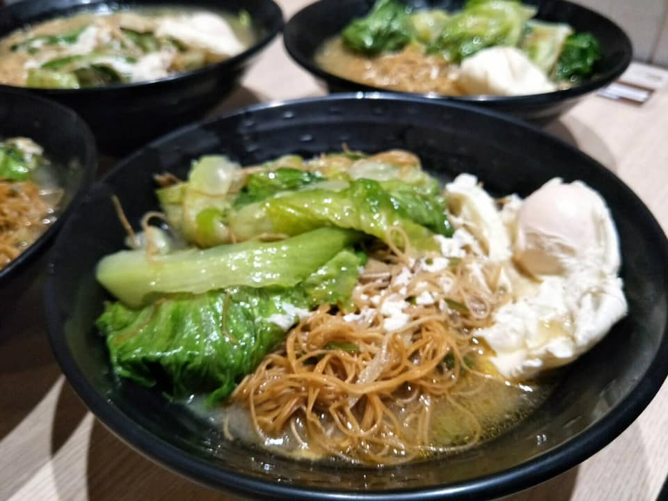
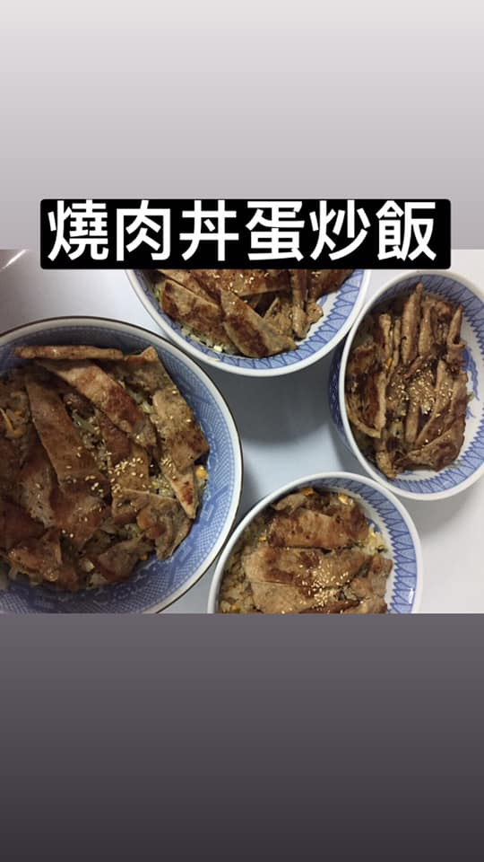

<> 捷米的特色，店裡的氣氛柔和和不壓抑，
一進門服務員親切的招呼，即播放輕快音樂迎接每一位進門的顧客，
就連內場的廚師，即便幫忙送餐，看到顧客進門也會幫忙招呼，並且給予親切的笑臉，
店內的員工相處也很和諧，不勾心鬥角，
總是互相幫忙，我是店裡的員工，每天下班總是吃的到捷米的餐點，
因為自己也看到捷米早安主廚的健康，還有對食材的要求，
所以幾乎只要有上班，都會吃店裡的食物，
真的好吃又健康，
最後，下面附上我們員工餐的影片。


連到第首頁
連到第二頁
連到第三頁
連到第四頁